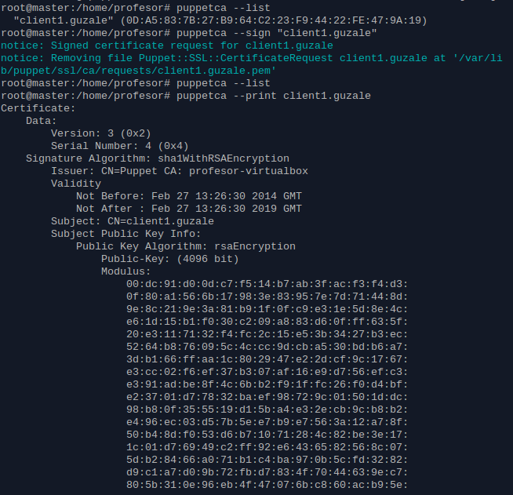
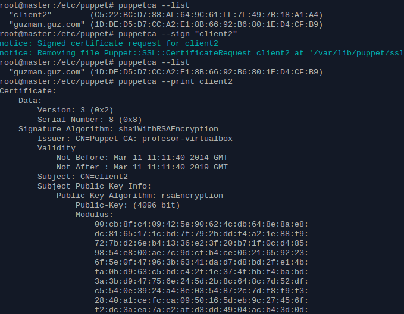
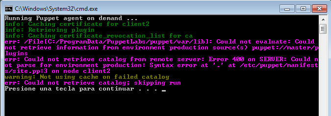

- Módulo: Sistemas Operativos
- Título del trabajo Servidor de impresión.
- Componentes del grupo: Guzmán Martín Martín y Alejandro Fuentes León.
- Curso Académico: 2013/2014
- Fecha de entrega: 12 de Marzo de 2014
Comenzaremos la siguiente práctica configurando el dnsdomainname, el hostname y el archivo /etc/hosts. También deberemos configurar correctamente la ip del servidor.
Haremos lo mismo en el cliente Linux.
Sin embargo, en el cliente Windows será diferente. Deberemos encontrar el archivo hosts propio de Windows y modificarlo.
También cambiaremos el nombre del equipo.
Para la instalación del Puppetmaster realizaremos el comando apt-get install puppetmaster en el servidor y apt-get install puppetagent en el cliente.
Crearemos una estructura de carpetas dentro de /etc/puppet para configurar el Puppetmaster. Usaremos los archivos para que escoja una configuración en función del cliente sea.
Aquí podemos ver el contenido de los diferentes archivos.
-Aceptación en máquina Debian

-Aceptación máquina windows
En el caso de windows nos acepta el certificado, pero luego da error:

